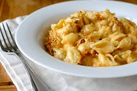

Golden breadcrumbs crown a sea of creamy, cheesy pasta. Baked until bubbly and steeped in sharp cheddar, this mac delivers the perfect crunch-to-cream payoff in every bite. Ready in 40 minutes, this is comfort food that always steals the spotlight.